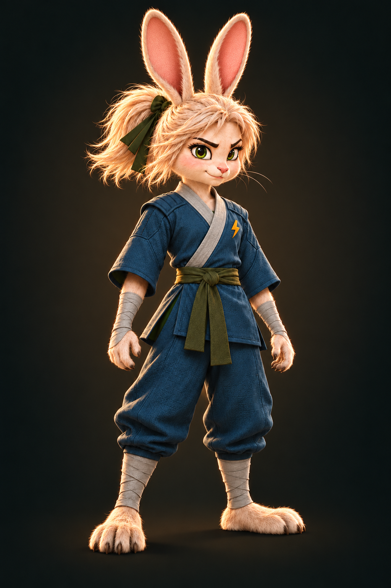
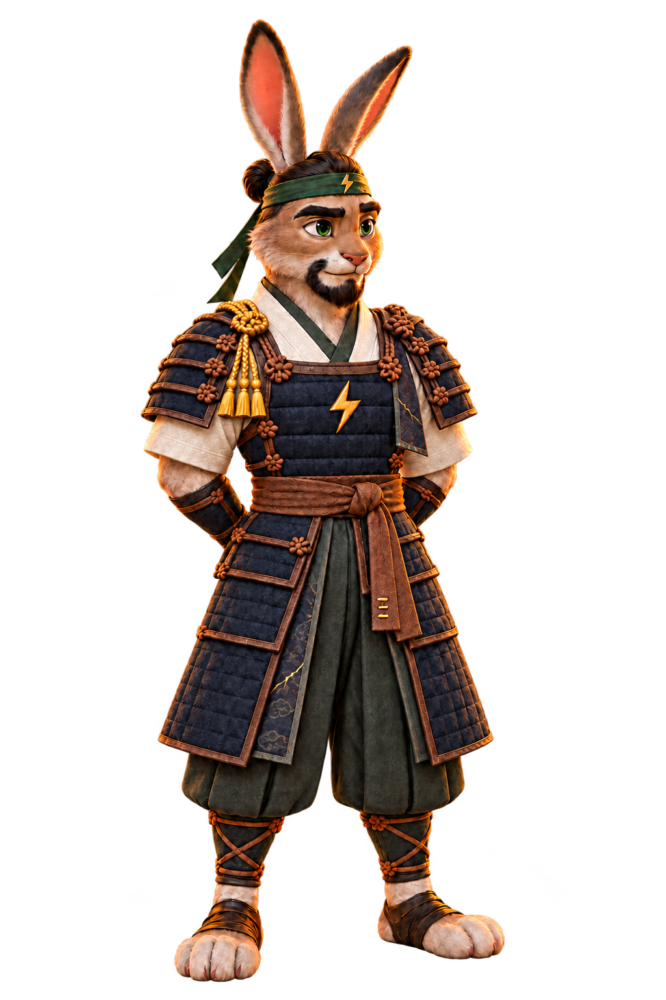

Raika
A young samurai learning to balance strength, courage, and compassion.

Strength to fight. Wisdom to protect. Enter a world of ancient traditions, impossible choices, and a young warrior finding her path.
Beyond the mountain paths, clans and warriors carry stories of honor, loyalty, and sacrifice. Raika's journey is only beginning.
Meet Raika: a young rabbit samurai learning that courage is more than strength.
Training, family, and ancient teachings shape the path ahead.
Discover an original fantasy universe through illustrated comic storytelling.
Discover the warriors and family at the heart of RAIKA.
A young samurai learning to balance strength, courage, and compassion.

Raika’s father and samurai mentor. He teaches that a warrior must be strong enough to fight and wise enough to protect.
Explore the free preview of RAIKA — The Legacy of Reishin. No payment required.
RAIKA is an independent creative project. Your support helps bring new comic chapters, illustrations, and stories to life.
Support on Ko-fi ↗